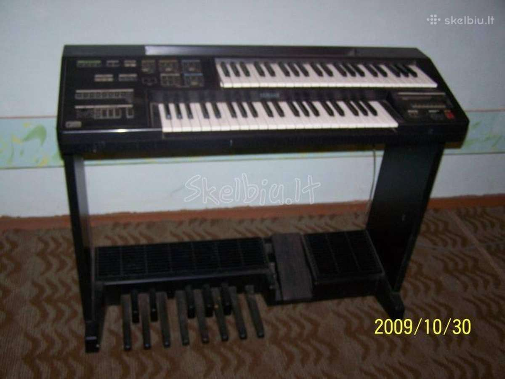

Welcome to sintezatorius
Sintezatorius PSR-E263 Black Internetu pigiau Žema kaina | b-a.eu
2020.10.30 03:32Kalba (language)
Pristatymas (shipping to)
Belarus Germany Denmark Estonia Spain France United Kingdom Ireland Italy Lietuva Latvia Norway Poland Russia Sweden Ukraine KuponaiPrekių katalogas
Baldai ir interjeras Statybinės medžiagos Buitinė technika Namai ir buitis Elektronika namams Metalai Įranga ir įrenginiai Santechnika Prekės vaikams Elektros prekės Laisvalaikio ir sporto prekės Prekės civiliams, kariams, medžiotojams Zoo prekės gyvūnams Medicina, sveikata Sodo daržo prekės Sekso prekės Kvepalai ir kosmetika Apranga, avalynė ir aksesuarai Dovanos, suvenyrai, pramogos Auto-Moto Išmanūs namai Žiūrėti visą prekių katalogą Prisijunkitearba registruokitės Apie b-a.eu Kontaktai D.U.K Kaip pirkti
EUR /
/
Pristatymas: Lietuva
Kalba (language) Lietuvių Latviešu English Pусский Pristatymas (shipping to) Belarus Germany Denmark Estonia Spain France United Kingdom Ireland Italy Lietuva Latvia Norway Poland Russia Sweden Ukraine Prekių krepšelis: 0 Parfumerija Moterims Kvepalai moterims Chanel Christian Dior Versace Hugo Boss Guerlain Lacoste Lancome Gucci Escada Giorgio Armani Serge Lutens Lanvin Moschino Chloe Lady Gaga Mexx Revlon Kenzo Calvin Klein Kosmetikos rinkiniai Kosmetika veidui Makiažo pagrindas Veido pudra Skaistalai Maskuojamos priemonės Kosmetika akims Tušai Šešėliai Akių pieštukai ir kontūrai Kosmetika lūpoms Lūpų dažai Blizgesiai Pieštukai lūpoms Kosmetika nagams Negyvosios jūros produktai Vyrams Kvepalai vyrams Chanel Christian Dior Versace Hugo Boss Lacoste Lancome Gucci Giorgio Armani Lanvin Moschino Mexx Kenzo Calvin Klein Visi kvepalai vyrams Skutimosi priemonės Losjonai, balzamai Skutimosi želė Skutimosi putos Higienos priemonės Šampūnai Dušo želė Dezodorantai/antiperspirantai Burnos higiena Muilas Kojų priežiūrai Naujas Kremai nuo saulės Dekoratyvinė kosmetika Kosmetikos rinkiniai Makeup Trading Elizabeth Arden Estee Lauder Clinique Visi rinkiniai Akių šešėliai Christian Dior Artdeco Dermacol Rimmel London Visi šešėliai akims Akių pieštukai ir kontūrai Lancome Christian Dior Rimmel London Visi akių pieštukai Akių tušai Chanel Lancome Christian Dior L´Oreal Paris Clinique Maybelline Rimmel London Visi akių tušai Makiažo pagrindas Revlon Lancome BOURJOIS Paris Christian Dior Visi makiažo pagrindai Veido pudra Clinique Lancome Visos pudros Skaistalai veidui Rimmel London Dermacol Lūpų dažai Christian Dior Max Factor Visi lūpų dažai Lūpų pieštukai Lūpų blizgesiai Dolce & Gabbana Lancome Visi blizgesiai lūpoms Maskuojamosios priemonės veidui Kosmetika nagams Dermacol Sally Hansen Priežiūra ir higiena Veido priežiūra Kremai veidui Kaukės ir serumai Paakių priežiūra Veido valikliai Asmens higiena Dezodorantai ir antiperspirantai Naujas Depiliacija Burnos higiena Intymi higiena Muilas Vonios druskos, aliejai Plaukų priežiūra Šampūnai Plaukų stiprikliai Plaukų modeliavimui Plaukų kaukės Kondicionieriai ir balzamai Plaukų dažai Viso kūno priežiūra Kūno kremai, losjonai Kūną stangrinančios priemonės Kojų priežiūra Rankų priežiūra Kūno šveitikliai Kremai ir losijonai nuo saulės nudegimų, netolygau įdegio Aromatiniai eteriniai aliejai Negyvosios jūros produktai Negyvoji jūra kūnui Kūno losjonai, kremai, sviestai Dušo želė, šveitikliai Papildomos, spec. priemonės Negyvoji jūra plaukams Plaukų balzamai, kaukės Negyvosios jūros šampūnai Negyvoji jūra veidui Paakių zonai Veido kremai, kaukės Veido valymui Papildomos negyvosios jūros priemonės Baldai Svetainės baldai Sekcijos Sofos, sofos-lovos Minkšti kampai Foteliai ir pufai Svetainės komodos Svetainės staliukai TV staliukai Lentynos Miegamojo baldai Miegamojo lovos Čiužiniai Miegamojo spintos Miegamojo baldų kolekcijos Virtuvės baldai Virtuviniai komplektai Virtuvinės spintelės Virtuviniai stalai Virtuviniai stalviršiai Virtuvės baldų priedai Vonios baldai Vonios baldų kolekcijos Vonios spintelės Sisteminiai baldai Šiuolaikiniai sisteminiai baldai Klasikiniai sisteminiai baldai Jaunuolio baldai Jaunuolio baldų kolekcijos Jaunuolio baldų komplektai Jaunuolio kėdės Valgomojo baldai Valgomojo stalai Valgomojo kėdės Prieškambario baldai Prieškambario kolekcijos Prieškambario komplektai Prieškambario spintos Batų dėžės Kabyklos Dekoratyviniai aksesuarai Paveikslai Baldai vaikams Vaikiškos lovos Spintos vaikams Stalai vaikams Kėdės vaikams Lentynos vaikams Kabyklos vaikams Lauko baldai Lauko stalai Lauko kėdės Įvairūs lauko baldai Lauko baldų komplektai Medžio masyvo baldai Mediniai virtuvės baldai Mediniai miegamojo baldai Mediniai valgomojo baldai Mediniai prieškambario baldai Mediniai staliukai Kiti mediniai baldai Biuro baldai Biuro baldų kolekcijos Biuro kėdės Baro ir restorano baldai Baro, restorano stalai Baro, restorano kėdės Statyboms Statybiniai blokeliai ir plytos Akyto betono blokeliai Silikatiniai blokeliai Silikatinės plytos Keramzitiniai blokeliai Keraminiai blokeliai Keraminės plytos Klinkerinės plytos Betono blokeliai Pamatiniai blokeliai Statybinės sąramos Stogų ir sienų dangos Beasbestinis šiferis Bituminės čerpelės Bituminiai lakštai PVC lakštai Prilydomos dangos Betoninės čerpės Keraminės čerpės Profiluota skarda Cedral apkala Sandwich plokštės Komplektavimo detalės Statybiniai mišiniai Cementas Mūro mišiniai Statybiniai klijai Gipsas Glaistas Išlyginamieji mišiniai Tinko mišiniai Cheminiai priedai Šilumos izoliacija Akmens vata Stiklo mineralinė vata Putų polistirenas Ekonominis polistirolas Termoizoliacinės plokštės Šilumos izoliacinis tinkas Kita šilumos izoliacija Statybinės plokštės Gipso kartonas (GKP) Orientuotų skiedrų plokštės (OSB) Fanera Cemento drožlių plokštės (CDP) Medžio drožlių plokštės (MDP) Medžio plaušo plokštės (MPP) Tvoros Tvorų segmentai Stulpai tvoroms Vartai Tvorų aksesuarai Tinklai tvoroms Skaldytų blokelių tvoros Betoninės tvoros Skardinės tvoros Kaminų sistemos Schiedel kaminai Fibo kaminai Kerapor kaminai Aplinkos tvarkymo elementai Grindinio trinkelės Klinkerio trinkelės Šaligatvio plytelės Kelio ir vejos bordiūrai Šulinių žiedai Dekoratyviniai gaminiai Apdailos medžiagos Apdailos plytelės Grindų apdailos medžiagos Sienų apdailos medžiagos Lubų apdailos medžiagos Apdailos sujungimo profiliai Dažai ir glaistai Emulsiniai dažai Lakai Akriliniai dažai Aliejiniai dažai Grindų dažai Emaliniai dažai Aerozoliniai dažai Dažymo įrankiai Gruntai Glaistai Rūdžių surišėjai, modifikatoriai Medžio tvirtinimo elementai Vinys Medsraigčiai, smeigės Kabliai (pusiaukilpiniai, įsukami) ir kilpos Sraigtai Din 7981, cinkuoti Sraigtai Din 571, cinkuoti Metalo tvirtinimo elementai Varžtai Veržlės Poveržlės Sraigtai Kniedės Vielokaiščiai Skiedikliai ir valikliai Acetonas Nefrazas Nitroskiedikliai Terpentinas Vaitspiritas Žibalas Skiedinio dėmių valikliai Specialios paskirties valikliai Tinklai, lynai, vielos, grandinės Statybiniai tinklai Vieliniai lynai, vielos Grandinės Plieninių lynų ir grandinių tvirtinimo elementai Tvirtinimo elementai Metalo profiliai Kaiščiai GKP tvirtinimo elementai Šilumos izoliacinių medžiagų tvirtinimo elementai Stogų, sienų tvirtinimo elementai Langai, durys, palangės, laiptai Stoglangiai Vidaus ir lauko durys Laiptai Durų stogeliai Palangės Plėvelės stogams ir sienoms Antikondensacinė plėvelė Difuzinė plėvelė Garo izoliacinė plėvelė Priešvėjinė plėvelė Apsauginės medžiagos Statybinė mediena Hidroizoliacija, hermetikai, impregnantai Poliuretaninės putos Pistoletai hermetikams Putų pistoletų valikliai Hidroizoliacinės medžiagos Impregnantai Silikoniniai hermetikai Akriliniai hermetikai Ugniai atsparūs hermetikai Bituminis siūlių užpilas Vandens suvedimo sistemos Lietvamzdžiai ir latakai Paviršinio vandens surinkimas Sodui, daržui Sėklos Daržovių, vaisių Gėlių Prieskonių Šiltnamiai Sodo įrankiai Grąžtai Grėbliai Įrankiai miškui Įrankiai vaikams Karučiai Kastuvai Kirviai Peiliai Pjūklai Šakės Sekatoriai Sodo žirklės Krūmapjovės ir trimeriai Lapų pūstuvai Mini traktoriai Moto blokai Pjūklai (benzininiai, elektriniai) Šakų, malkų smulkintuvai Ūkinės prekės Kopėčios Šluotos Kitos Žoliapjovės, vėjapjovės Fontanai Prekybinės palapinės Sniego valymo technika Sniego kastuvai Sniego stumdytuvai Sniego valytuvai Laisvalaikis Prekės sportui Prekės turizmui Vandens gaiva Prekės žvejybai Muzikos instrumentai Motociklininkui Rimtesniam modeliavimui Vaikams Namams Jai ir Jam Išpardavimai Akcijos Prekių katalogas Mano meniu Daugiau +370 699 62969 8:00-17:00 d.d. info@b-a.eu Laisvalaikio ir sporto prekės Muzikos instrumentai Sintezatoriai Sintezatorius PSR-E263 BlackSintezatorius PSR-E263 Black
(Prekės kodas: 310820101345) atgal Paveikslėlis 1 iš 2 Paveikslėlis 2 iš 2
Pateiktos prekių nuotraukos gali skirtis nuo užsakytos prekės. Nuotraukoje gali būti priedų, lipdukų ar kitų detalių, kurių nėra prekės komplektacijoje. Dėl Jūsų įrenginio nustatymų ekrane matoma prekės spalva gali skirtis nuo realios prekės spalvos. Prekė yra išparduota . Šiuo metu jos nėra nei mūsų, nei mūsų tiekėjo sandėliuose. Gavę Jūsų paklausimą, esant galimybei, pasistengsime atsakyti. Klauskite Buvusi kaina: 180.60 €
Klauskite Pranešti, kai prekė atsiras Gaukite nuolaidos kodą! Pirkite išsimokėtinai Mielas Lankytojau,
Turite klausimų apie prekę?
Gal radote klaidą?
O galbūt žinote kur ši prekė parduodama pigiau ir norite derėtis dėl kainos?
Pateikite detalią informacija žemiau esančioje užklausimo formoje ir spauskite mygtuką "Siųsti" . Į Užklausimus stengiamės atsakyti darbo metu per 1 valandą! Dėkojame, kad klausiate. Mielas Lankytojau,
Norite gauti nuolaidos kodą? Užpildykite formą ir jei tik bus galimybė artimiausiu metu (darbo valandomis) suteiksime Jums nuodaidos kodą.
Prašome įvesti savo el. pašto adresą, kuriuo būsite informuotas, kai prekė vėl atsiras prekyboje. Gamintojas YAMAHA Prekės kodas 310820101345
Pristatymo būdai ir kainos Belarus Germany Denmark Estonia Spain France United Kingdom Ireland Italy Lietuva Latvia Norway Poland Russia Sweden Ukraine
Prekės atsiėmimas iš sandėlio Nemokamai Prekės pristatymas į namus 4.50 € Prekės pristatymas į pašto skyrių 3.00 €Prekės charakteristikos:
Prekės tiekimo terminas (d) 3-10 d.d. Displėjus Ir Metronomas +Prekės vadybininkas:
Brigita Zaicevienė Telefonas: +370 650 05867 El. paštas: info@b-a.eu KOMENTARAI Šiuo metu prekės sintezatorius psr-e263 black kaina yra 180.60 € (šimtas aštuoniasdešimt € šešiasdešimt ct). Laisvalaikio ir sporto prekės Muzikos instrumentai Sintezatoriai Sintezatorius PSR-E263 Black Sintezatorius PSR-E263 Black - šiuo metu Jūs esate šioje prekėje. Sintezatorius PSR-E263 Black • Sintezatoriai • Muzikos instrumentai • Laisvalaikio ir sporto prekės, kaina internetu. Ši prekė priklauso grupei Sintezatoriai. Perkant internetu šios grupės prekes gerokai sutaupysite. Dėkite prekę Sintezatorius PSR-E263 Black į krepšelį ir gausite gerą kainą arba spauskite mygtuką „Gaukite nuolaidos kodą“. Jei Jums neaišku kaip pirkti internetu ar yra klausimų dėl prekės – spauskite mygtuką „Klauskite“. Jei Jus tenkina šios prekės kaina internetu, bet šiuo metu trūksta pinigų – spauskite mygtuką „Pirkite išsimokėtinai“. Jeigu laukiate šios prekės Sintezatorius PSR-E263 Black akcijų ar išpardavimų – spauskite mygtuką „Pranešti, kai prekė bus atpigusi“. Tokiu būdu mygtukų pagalba greitai, patogiai ir pigiai įsigysite šią prekę. Kitos populiarios analogiškos prekės šioje grupėje muzikos instrumentai: sintezatorius yamaha dgx-640c keyboard; mc brown pocket b-trumpet silver, for beginners; sintezatorius psr-e363 black; smuikas msa childrens violin set; sintezatorius yamaha ypt-220 keyboard; elektrinis pianinas artesia pa-88wh, baltas; sintezatorius casio sa-47 keyboard; gewapure drum craft drum-set; sintezatorius yamaha dgx-640w keyboard; gewa trumpet mouthpiece 5 c; geromis kainomis, kurias internete išsirinksi greičiau.Pristatymas visoje Lietuvoje - Vilniuje, Kaune, Klaipėdoje, Šiauliuose, Panevėžyje, Alytuje, Marijampolėje, Mažeikiuose, Jonavoje, Utenoje, Kėdainiuose, Telšiuose, Visagine, Tauragėje, Ukmergėje, Plungėje, Kretingoje, Šilutėje, Radviliškyje, Palangoje, Gargžduose, Druskininkuose, Rokiškyje, Biržuose, Elektrėnuose, Garliavoje, Kuršėnuose, Jurbarke, Vilkaviškyje, Raseiniuose, Anykščiuose, Lentvaryje, Grigiškėse, Naujojoje Akmenėje, Prienuose, Joniškyje, Kelmėje, Varėnoje, Kaišiadoryje, Pasvalyje, Kupiškyje, Zarasuose. Apie mus D.U.K Garantijos ir grąžinimas Prekių pristatymas Kontaktai Partneriai Reklama Prekių istorija Sales and Export
© 2010-2020 b-a.eu. Visos teisės saugomos.
Erikab-a.eu konsultantė Sveiki, turite klausimų?
Mes Jums padėsime!
Parašykite man el. paštu: info@b-a.eu × Erika
b-a.eu konsultantė Sveiki, turite klausimų?
Mes Jums padėsime!
Parašykite man laišką el. paštu: info@b-a.eu Uždaryti
